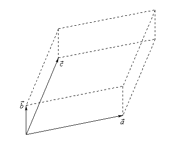

import sympy
import numpy as np
import matplotlib.pyplot as plt
from matplotlib import cmIntroduction
- Introduction to Linear Algebra with Python
- Basic Linear Algebra with Python
- Intermediate linear algebra
- Intermediate Linear Algebra with Python - Part I
- Intermediate Linear Algebra with Python - Part II
- Advanced linear algebra
- Advance Linear Algebra with Python - Part I
- Advance Linear Algebra with Python - Part II
In this post I will introduce you to the notion of vector, its characteristics, and operations defined on vectors. I will also show you how to use Python to do these operations.
Vector
Cross Product
In the case of the dot product between two vectors, we saw that the result is a scalar. In the case of a cross product the result is a vector, so the cross product is also called the vector product. The resulted vector is a vector that is at right angles to both the other vectors in 3D Euclidean space. This means that the cross-product only really makes sense when working with vectors that contain three components.
There are two formulas to calculate the cross product. One is algebraic and second is geometric. More precisely, the first formula catches the algebraic intuition of cross product and second catches the geometric intuition of the cross product.
If we have two vectors \(A\) and \(B\) in such a way:
\[ A = \begin{bmatrix} a_{1} \\ a_{2} \\ a_{3} \end{bmatrix} \quad B = \begin{bmatrix} b_{1} \\ b_{2} \\ b_{3} \end{bmatrix} \]
The algebraic formula is:
\[ \vec{C} = \vec{A} \times \vec{B} = \begin{bmatrix} (a_{2} \cdot b_{3}) - (a_{3} \cdot b_{2}) \\ (a_{3} \cdot b_{1}) - (a_{1} \cdot b_{3}) \\ (a_{1} \cdot b_{2}) - (a_{2} \cdot b_{1}) \end{bmatrix} \]
At the first glance, the formula is not easy to remember. Let try another formula which uses some advanced components.
\[ \vec{A} \times \vec{B} = \begin{bmatrix} \vec{i} & \vec{j} & \vec{k} \\ a_{1} & a_{2} & a_{3} \\ b_{1} & b_{2} & b_{3} \end{bmatrix} \]
where \(\vec{i}\), \(\vec{j}\) and \(\vec{k}\) are bases vectors and I will explain in advance part of these series.
To find the cross product we have to find the determinant of above matrix in the following way:
\[ \vec{A} \times \vec{B} = \begin{bmatrix} a_{2} & a_{3} \\ b_{2} & b_{3} \end{bmatrix} \vec{i} \quad - \quad \begin{bmatrix} a_{1} & a_{3} \\ b_{1} & b_{3} \end{bmatrix} \vec{j} \quad + \quad \begin{bmatrix} a_{1} & a_{2} \\ b_{1} & b_{2} \end{bmatrix} \vec{k} \]
Suppose we have two vectors:
\[ A = \begin{bmatrix} 2 \\ 3 \\ 1 \end{bmatrix} \quad B = \begin{bmatrix} 1 \\ 2 \\ -2 \end{bmatrix} \]
Then cross product is:
\[ \vec{C} = \vec{A} \times \vec{B} = \begin{bmatrix} (3 \cdot (-2)) - (1 \cdot 2) \\ (1 \cdot 1) - (2 \cdot (-2)) \\ (2 \cdot 2) - (3 \cdot 1) \end{bmatrix} = \begin{bmatrix} (-6) - 2 \\ 1 - (-4) \\ 4 - 3 \end{bmatrix} = \begin{bmatrix} -8 \\ 5 \\ 1 \end{bmatrix} \]
The geometric formula is:
\[ \vec{C} = \vec{A} \times \vec{B} = \|\vec{A}\|\cdot\|\vec{B}\|\cdot\sin{\theta} \cdot \hat{n} \]
where, \(\theta\) is the angle between \(\vec{A}\) and \(\vec{B}\). Also, \(\hat{n}\) is a unit vector perpendicular to both \(\vec{A}\) and \(\vec{B}\), such that \(\vec{A}\), \(\vec{B}\) and \(\hat{n}\) form a right-handed system
There is also geometric application of the cross product. If we three vectors \(\vec{a}\), \(\vec{b}\) and \(\vec{c}\) which forms the three dimensional figure such as:

Then the area of the parallelogram ( two dimensional front of this object ) is given by:
\[ {\rm{Area}} = \left\| {\vec{a} \times \vec{b}} \right\| \]
This is the dot product of the result of cross product between vectors \(\vec{a}\) and \(\vec{b}\)
The volume of the parallelepiped ( the whole three dimensional object ) is given by:
\[ {\rm{Volume}} = \left| {\vec{a} \centerdot \left( {\vec{b} \times \vec{c}} \right)} \right| \]
here, absolute value bars are necessary since the result could be negative and volume must be positive.
A = np.array([2, 3, 1])
B = np.array([1, 2, -2])
print("A =", A)
print("B = ", B)
print("Cross Product is:", np.cross(A, B), sep="\n")A = [2 3 1]
B = [ 1 2 -2]
Cross Product is:
[-8 5 1]Span
suppose we have set of vectors:
\[ {\alpha _1},...,{\alpha _n} \in A \]
then we can define the space \(S\) spanned by:
\[ {\alpha _1},...,{\alpha _n} \]
as
\[ S\left( {{\alpha_{1}},...,{\alpha_{n}}} \right) = \left\{ {\sum_{i = 1}^{n} {{c_{i}}{\alpha_{i}}\;|\;{c_{i}} \in \mathbb{R}} } \right\} \]
which is the set of all linear combinations of the vectors in this subspace. The set is a subspace of \(A\):
\[ S\left( {{\alpha _1},...,{\alpha _n}} \right) \subset A \]
In other words, if we have set of vectors
\[ A := \{a_1, \ldots, a_k\} \in \mathbb R^n \]
it’s natural to think about the new vectors we can create from these vectors by performing linear operations. New vectors created in this way are called linear combinations of \(A\). Particularly, \(X \in \mathbb{R}^n\) is a linear combination of \(A\) if
\[ X = \beta_1 a_1 + \cdots + \beta_k a_k \text{ for some scalars } \beta_1, \ldots, \beta_k \]
here, \(\beta_1, \ldots, \beta_k\) are called coefficients of the linear combination.
The set of linear combinations of \(A\) is the span of \(A\) and is written as \(Span(A)\)
For example, if
\[ \vec{A} = \{e_1, e_2, e_3\} \quad \text{such that} \quad e_1 := \begin{bmatrix} 1 \\ 0 \\ 0 \end{bmatrix} , \quad e_2 := \begin{bmatrix} 0 \\ 1 \\ 0 \end{bmatrix} , \quad e_3 := \quad \begin{bmatrix} 0 \\ 0 \\ 1 \end{bmatrix} \]
then the span of \(A\) is all of \(\mathbb{R}^3\), because, for any \(X=(x_1, x_2, x_3)\in \mathbb{R}^3\), we can write
\[ X = x_1 e_1 + x_2 e_2 + x_3 e_3 \]
This means that by using \(A\) or vectors \(e_1\), \(e_2\) and \(e_3\) we can generate any vector in \(\mathbb{R}^3\) by performing linear operations.
This figure below shows the span of \(A = \{a_1, a_2\}\) in \(\mathbb{R}^3\). The span is a 2 dimensional plane passing through these two points and the origin.
# Linear function to generate a plane
def f(x, y):
return (0.2 * x) + (0.1 * y)
fig = plt.figure(figsize=(10, 8))
ax = fig.add_subplot(projection="3d")
ax.set(xlim=(-5, 5), ylim=(-5, 5), zlim=(-5, 5), xticks=(0,), yticks=(0,), zticks=(0,))
z = np.linspace(-5, 5, 3)
y = np.zeros(3)
x = np.zeros(3)
ax.plot(x, y, z, "k-", lw=2, alpha=0.5)
ax.plot(z, x, y, "k-", lw=2, alpha=0.5)
ax.plot(y, z, x, "k-", lw=2, alpha=0.5)
# Set vector coordinates
x_coords = np.array((3, 3))
y_coords = np.array((4, -4))
z = f(x_coords, y_coords)
for i in (0, 1):
ax.text(x_coords[i], y_coords[i], z[i], f"$a_{i+1}$", fontsize=14)
# We need to draw lines from origin to the vectors
for i in (0, 1):
x = (0, x_coords[i])
y = (0, y_coords[i])
z = (0, f(x_coords[i], y_coords[i]))
ax.plot(x, y, z, "b-", lw=1.5, alpha=0.6)
# As we already draw axes and vectors, it's time to plot the plane
xr2 = np.linspace(-5, 5, 50)
yr2 = np.linspace(-5, 5, 50)
x2, y2 = np.meshgrid(xr2, yr2)
z2 = f(x2, y2)
ax.plot_surface(x2, y2, z2, rstride=1, cstride=1, cmap=cm.jet, linewidth=0, antialiased=True, alpha=0.2)
plt.show()Linear Independence and Dependence
Above, I mentioned a linear combination. In order to define linear dependence and independence let farther clarify what is a linear combination. If we have a set of vectors
\[ \vec{A} = \{a_1, \ldots, a_k\} \]
which all have the same dimension, then
A linear combination of the vectors in \(A\) is any vector of the form \(c_{1} a_{1} + c_{2} a_{2} + \cdots + c_{k} a_{k}\), where \(c_{1}, c_{2}, \ldots, c_{k}\) are arbitrary scalars
For example, if \(A = \{[1, 2], [2, 1]\}\), then
\[ 2 a_{1} - a_{2} = 2 ([1, 2]) - [2, 1] = [0, 3] \]
is linear combination of the vectors in \(A\).
A set \(A\) of m-dimensional vectors is linearly independent if the only linear combination of vectors in \(A\) that equals \(0\) is the trivial linear combination
This formal definition seems a little bit confusing. Let consider the example to catch the idea.
The set of vectors
\[ A = \{[1, 0], [0, 1]\} \]
is linearly independent. Let prove this claim. We need to find constants \(c_{1}\) and \(c_{2}\) satisfying
\[ c_{1} ([1, 0]) + c_{2} ([0, 1]) = [0, 0] \]
solving this system of equations gives that \([c_{1}, c_{2}] = [0, 0] \rightarrow c_{1} = c_{2} = 0\), in turn this implies that \(A\) is linearly independent.
The following statements are equivalent for a linear independence of \(A\):
No vector in \(A\) can be formed as a linear combination of the other vectors. This means that if we have three vectors in \(A\), any of them cannot be expressed as the linear combination of the other two.
If \(c_{1} a_{1} + c_{2} a_{2} + \cdots + c_{k} a_{k} = 0\), then \(c_{1} = c_{2} = \cdots = c_{k} = 0\)
A set \(A\) of m-dimensional vectors is linearly dependent if there is a nontrivial linear combination of the vectors in \(A\) that adds up to \(0\)
The set of vectors
\[ A = \{[1, 2], [2, 4]\} \]
is linearly dependent set of vectors. Let see how.
\[ c_{1} ([1, 2]) + c_{2} ([2, 4]) = [0, 0] \]
There is a nontrivial linear combination with \(c_{1} = 2\) and \(c_{2} = 1\) that yields \(0\). This implies \(A\) is the linearly dependent set of vectors. It’s easy in this case to spot linear dependence by first glance, as the second vector is 2 times the first vector, which indicates linear dependence.
matrix = np.array([[1, 2], [2, 1]]) # this is our set of vectors
_, inds = sympy.Matrix(matrix).T.rref()
print(inds)(0, 1)This says that the vectors at index 0 and 1 are linearly independent. Let consider a linearly dependent set of vectors to see the result of the above code clearly.
matrix = np.array([[0, 1, 0, 0], [0, 0, 1, 0], [0, 1, 1, 0], [1, 0, 0, 1]]) # this is our set of vectors
_, inds = sympy.Matrix(matrix).T.rref()
print(inds)(0, 1, 3)This says that vectors at index 0, 1, and 3 are linearly independent, while vector at index 2 is linearly dependent.
Conclusion for part I
Here, I only covered half of the materials that I initially had intended to cover. I split those materials into two parts, mainly because to improve readability and maintain consistency.
In the second part, I review matrices and operations on matrices.